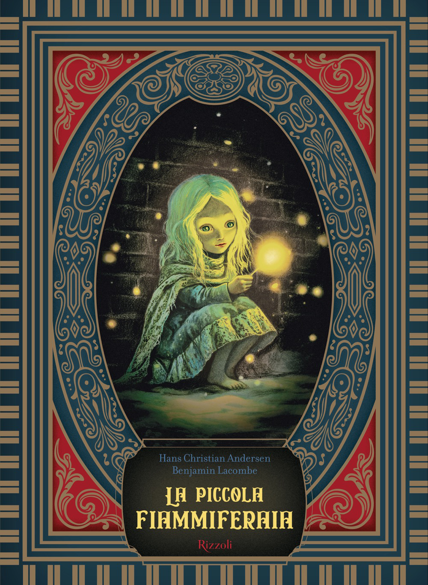

7:51 · 1 OPERA
La piccola fiammiferaia.
Il filo del discorso
Una riflessione iniziale sulla pietà e sull’indifferenza introduce la lettura della Piccola fiammiferaia di Andersen. La vicenda della bambina al freddo, le visioni suscitate dai fiammiferi e l’apparizione della nonna sono presentate come un percorso dentro fragilità e solitudine. La chiusa contrappone ciò che vedono i passanti al significato consolatorio che la narrazione affida all’ultimo sorriso della bambina.
I libri nel discorso

La piccola fiammiferaia
Copertina: Rizzoli · edizione illustrata da Benjamin Lacombe · riferimento
Immagine associata all’ISBN di riferimento e controllata visivamente; edizione e traduzione non identificate come quelle citate o lette nel video.
Autore e titolo annunciati nell’introduzione; lettura da circa 120 secondi.
Passaggio 0:49 ↗ · Fonti e libro ↗Minutaggi ricavati da testi automatici, da riascoltare. Le identificazioni probabili sono segnalate accanto ai libri.